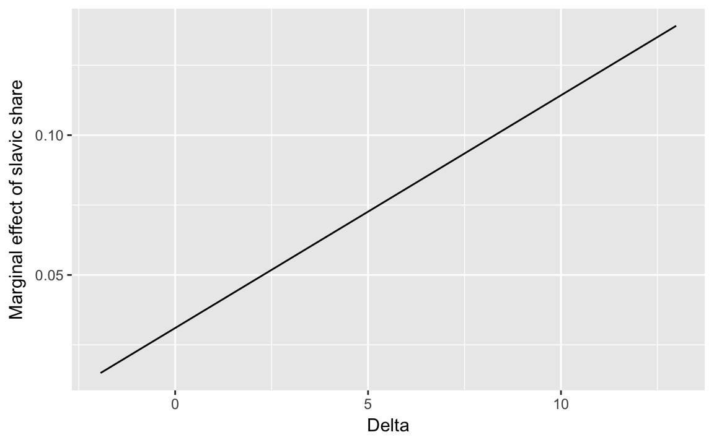

4 Posterior Inference
4.1 Prerequisites
The haven package is used to read Stata .dta files.
library("rubbish")
library("haven")4.1.1 Introduction
The posterior distribution is the probability distribution \(\Pr(\theta | y)\).
One we have the posterior distribution, or more often a sample from the posterior distribution, it is relatively easy to perform inference on any function of the posterior.
Common means to summarize the post
- mean: \(\E(p(\theta | y)) \approx \frac{1}{S} \sum_{i = 1}^S \theta^{(s)}\)
- median: \(\median(p(\theta | y)) \approx \median \theta^{(s)}\)
- quantiles: 2.5%, 5%, 25%, 50%, 75%, 95%, 97.5%
credible interval:
- central credible interval: the interval between the p/2% and 1 - p/2% quantiles
- highest posterior density interval: the narrowest interval containing p% of distribution
4.1.2 Functions of the Posterior Distribution
It is also easy to conduct inference on functions of the posterior distribution.
Suppose \(\theta^{(1)}, \dots, \theta^{(S)}\) are a sample from \(p(\theta | y)\), the \(f(\theta^{(1)}), \dots, f(\theta^{(S)})\) are a sample from \(p(f(\theta) | y)\).
This is not easy for methods like MLE that produce point estimates. Even with MLE
- Even in OLS, non-linear functions coefficients generally require either the Delta method or bootstrapping to calculate confidence intervals.
- Berry, Golder, and Milton (2012), Golder (2017),Brambor, Clark, and Golder (2006) discuss calculating confidence intervals
- See Rainey (2016) on “transformation induced bias”
- See Carpenter (2016) on how reparameterization affects point estimates; this is a Stan Case study with working code
4.1.3 Marginal Effects
4.1.3.1 Exmample: Marginal Effect Plot for X
This example from Matt Golder’s Interactions page constructs a marginal effect plot for \(X\), where there is an interaction between \(X\) and \(Z\). \[ Y = \beta_0 + \beta_x + \beta_z + \beta_{xz} X Z + \epsilon \]
alexseev <- read_dta("data/alexseev.dta")The regression that is run
mod_f <- xenovote ~ slavicshare * changenonslav + inc9903 + eduhi02 + unemp02 + apt9200 + vsall03 + brdcont
lm(mod_f, data = alexseev)
#>
#> Call:
#> lm(formula = mod_f, data = alexseev)
#>
#> Coefficients:
#> (Intercept) slavicshare
#> 8.942878 0.031486
#> changenonslav inc9903
#> -0.851108 0.000234
#> eduhi02 unemp02
#> -0.039512 1.432013
#> apt9200 vsall03
#> 0.030125 0.661163
#> brdcont slavicshare:changenonslav
#> 2.103688 0.008226Use the lm_preprocess function in the rubbish package to turn the model formula into a list with relevant data.
mod_data <- lm_preprocess(mod_f, data = alexseev)[c("X", "y")]
mod_data <- within(mod_data, {
n <- nrow(X)
k <- ncol(X)
# indices of relevant coefficients
M <- 100
changenonslav <- seq(min(X[ , "changenonslav"]), max(X[ , "changenonslav"]),
length.out = M)
idx_b_slavicshare <- which(colnames(X) == "slavicshare")
idx_b_slavicshare_changenonslav <-
which(colnames(X) == "slavicshare:changenonslav")
b_loc <- 0
# data appropriate prior
b_scale <- max(apply(X, 2, sd)) * 3
sigma_scale <- sd(y)
})Get the mean of dydx
dydx <- get_posterior_mean(mod_fit, pars = "dydx")
ggplot(tibble(changenonslav = mod_data$changenonslav,
dydx = dydx[ , "mean-all chains"]),
aes(x = changenonslav, y = dydx)) +
geom_line() +
ylab("Marginal effect of slavic share") +
xlab(paste(expression(Delta, "non-Slavic Share")))

Plotting each iteration as a line:
dydx_all <-
rstan::extract(mod_fit, pars = "dydx")$dydx %>%
as.tibble() %>%
mutate(.iter = row_number()) %>%
# keep only a few iter
gather(param, value, -.iter) %>%
left_join(tibble(param = paste0("V", seq_along(mod_data$changenonslav)), changenonslav = mod_data$changenonslav),
by = "param")
dydx_all %>%
filter(.iter %in% sample(unique(.iter), 2 ^ 8)) %>%
ggplot(aes(x = changenonslav, y = value, group = .iter)) +
geom_line(alpha = 0.3) +
ylab("Marginal effect of slavic share") +
xlab(paste(expression(Delta, "non-Slavic Share")))
Summarize the marginal effects with mean, 50% central credible interval, and 90% central credible intervals:
dydx_all %>%
group_by(changenonslav) %>%
summarise(mean = mean(value),
q5 = quantile(value, 0.05),
q25 = quantile(value, 0.25),
q75 = quantile(value, 0.75),
q95 = quantile(value, 0.95)) %>%
ggplot(aes(x = changenonslav,
y = mean)) +
geom_ribbon(aes(ymin = q5, ymax = q95),
alpha = 0.2) +
geom_ribbon(aes(ymin = q25, ymax = q75),
alpha = 0.2) +
geom_line(colour = "blue") +
ylab("Marginal effect of slavic share") +
xlab(expression(paste(Delta, "non-Slavic Share")))